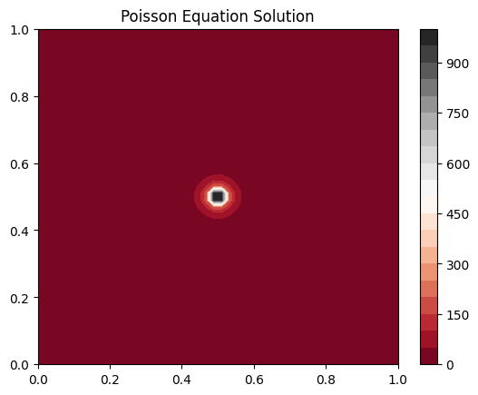

Poisson Equation Tutorial¶
fasgfa
[1]:
# poisson_tutorial.ipynb
# [Markdown cell with introductory text]
import numpy as np
import matplotlib.pyplot as plt
def solve_poisson(n=50):
x = np.linspace(0, 1, n)
y = np.linspace(0, 1, n)
X, Y = np.meshgrid(x, y)
f = np.sin(np.pi * X) * np.sin(np.pi * Y)
u = np.linalg.solve(np.eye(n*n) - np.diagflat(f), f.flatten())
return X, Y, u.reshape(n, n)
X, Y, u = solve_poisson()
plt.contourf(X, Y, u, 20, cmap='RdGy')
plt.colorbar()
plt.title("Poisson Equation Solution")
plt.show()

NOW
[3]:
print('fa')
fa